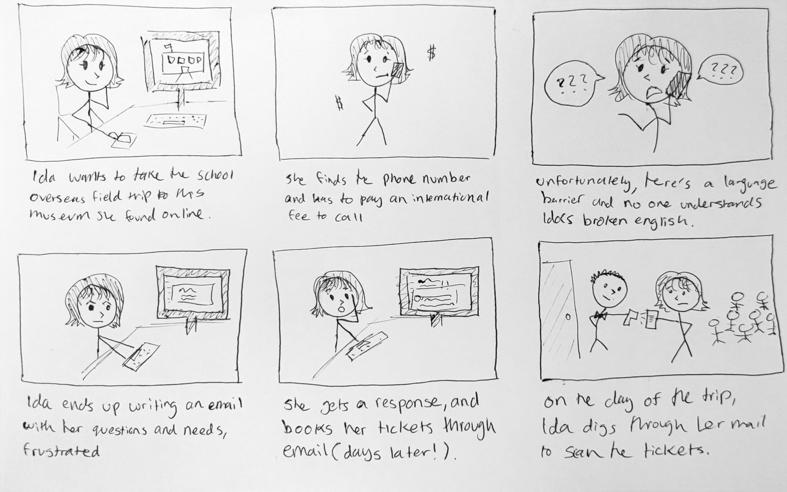
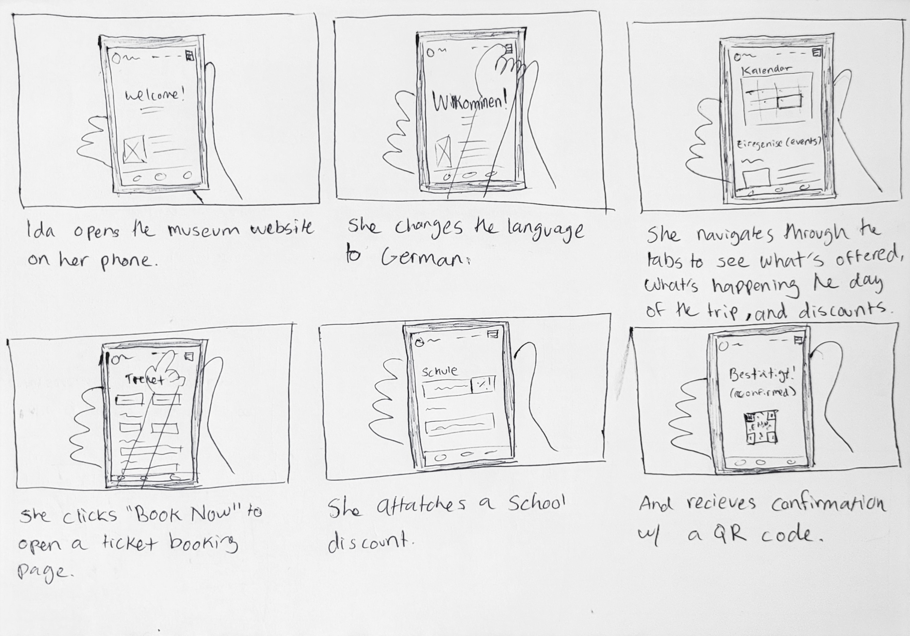

Mind Splurge
Google UX Project
Role: Solo researcher & Designer
June - August 2025

Google UX Project
Role: Solo researcher & Designer
June - August 2025
The Problem: People don’t have an easy way to book visits or gather info about the museum without
navigating third party platforms or speaking directly to a representative.
The Goal: Creative a single, simple platform where people can get info about the museum, its
work,
its events, and book tickets.
Design an app and a responsive website for a public art museum to advertise exhibitions and
events, provide museum information to patrons, and enable patrons to schedule visits.
Conducted qualitative and quantitative research to understand user needs and pain points. This included
general user interviews, and research of first hand experiences online.
I then conducted a
compeitive
audit of five direct and indirect museums/experiences in the US and San Diego, noting their strengths
and
weaknesses, gaps, and ticket booking processes.
Some insights from my research include the following:
After my research, I created user personas to represent the target audience for Mind Splurge. These
personas
helped me
empathize with users and keep their needs in mind throughout the design process.
Jesse Carpenter: A 67 year old retired IT engineer, and an avid art lover living in San Diego. He enjoys spending time with his two grandchildren and wants to take them to the museum , but he has reading problems.
Ida Neumann: A 29 year old high school counselor from Stuttgard, Germany. Her school is visiting California for a tip, and she wants to take them to this museum. She is limited by her budget, and is unfamilar with the area and not fluent in English.
This then allowed me to devlop a storyboard to outline the key features and functionalities of the app
and website. I focused on the persona Ida, our German persona, as she goes struggles to book tickets for
the
school trip without a centralized website vs the process she would undergo with the website.

Finally, I narrowed my information architechture diagram to focus on the most essential pages and
features for the website based on my user flows, personas, and storyboard.
At this point, I was ready to start designing low-fidelity wireframes for the website. I created a few iterations of paper wireframes, focused on a simple, easy to scan layout with clear but informative navigation. I then finalized one, which i tranferred into a low-fidelity figma protoype.
I was now ready to conduct usability testing on my low-fidelity prototype. I recruited 5
participants
who fit my user personas, and had them complete a series of tasks using the prototype while thinking
aloud. I observed their interactions and took notes on their feedback.
These are some of the main insights I found:
Taking my feedback into account, I created high-fidelity mockups of the website in Figma. I focused on
improving the navigation by finalizing a persistent nav bar with all key pages, making the call to
action buttons
more noticable, and condensing information/resizing UI components to reduce scrolling (especially during
the
ticket booking process.)
I developed a UI with paint splatter motifs to match the artistic and creative vibe of the
museum,
while keeping a clean, simple layout with lots of negative space for easy scanning.
I conducted another round of usability testing with 5 new participants using the high-fidelity
prototype, and made a few more changes, such as adding a calendar view for ticket booking.
This project was an amazing practice and introduction to hands-on UX skills. This was my first time
working on a full UX project from start to finish, and I learned a lot about using Figma (my first time
using it!), methods of putting myself in the end-users shoes, and iterating based on feedback.
I'm proud of the final product, and would love to continue working on it in the future by conducting
more
usability testing with a larger and more diverse group of participants, adding more accessibility
features, and need to develop a responsive mobile version of the product!